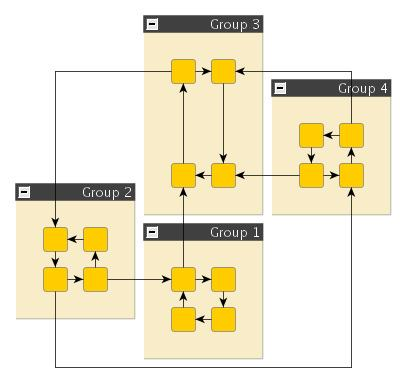
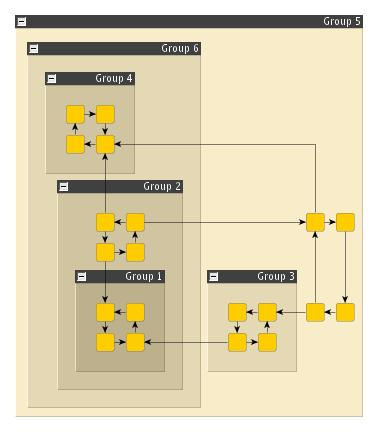

| Orthogonal Layout of Grouped Graphs | ||
|---|---|---|
| Prev | Chapter 5. Automatic Graph Layout | Next |
Class OrthogonalGroupLayouter is an orthogonal layout provider specialized for laying out grouped graphs.
is an orthogonal layout provider specialized for laying out grouped graphs.
Those parts of a graph that belong to the same group will be placed in a way that they share a common rectangular area in the layout space. The positions and sizes of these group nodes will be calculated by the algorithm.
The layout algorithm is well suited for medium-sized sparse graphs. It produces compact drawings with no overlaps, few crossings, and few bends.
Figure 5.66. Sample group layouts produced by class OrthogonalGroupLayouter
|

|

|
| A diagram with four groups and edges connecting nodes within these groups. | A diagram with grouped groups. |
Class OrthogonalGroupLayouter knows a number of data provider keys which are used to retrieve supplemental layout data for a graph's elements. The data is bound to the graph by means of a data provider, which is registered using a given look-up key. Table 5.46, “Data provider look-up keys” lists all look-up keys for OrthogonalGroupLayouter.
Binding supplemental layout data to a graph is described in the section called “Providing Supplemental Layout Data”.
Table 5.46. Data provider look-up keys
| Key | Element Type | Value Type | Description |
|---|---|---|---|
| GROUP_DPKEY |
Node | boolean | For each node a boolean value indicating whether it is a group node or not. |
| NODE_ID_DPKEY |
Node | Object | For each node an Object that serves as a unique ID. |
| PARENT_NODE_ID_DPKEY |
Node | Object | For each node an Object indicating the group node it belongs to. The Object matches the unique ID of a group node that is in the same graph. |
| GROUP_NODE_INSETS_DPKEY |
Node | Insets |
For each group node a YInsets |
| MINIMUM_NODE_SIZE_DPKEY |
Node | YDimension |
For each group node a YDimension |
| EDGE_LABEL_LAYOUT_KEY |
Edge | LabelLayoutData[] | For each edge an array of LabelLayoutData objects that encode size and preferred placement for all labels of the edge. |
| EDGE_LAYOUT_DESCRIPTOR_DPKEY |
Edge | EdgeLayoutDescriptor |
For each edge an EdgeLayoutDescriptor |
| NODE_HALO_DPKEY |
Node | NodeHalo |
A NodeHalo |
| ABORT_HANDLER_DPKEY |
Graph | AbortHandler |
An AbortHandler |
Setup of a grouped graph's hierarchy of nodes and using the grouping keys (GROUP_DPKEY, NODE_ID_DPKEY, and PARENT_NODE_ID_DPKEY) is described in detail in the section called “Setup for Layout”.
Unlike the more general orthogonal layout algorithm this specialized layout algorithm provides only a few options.
| Grid | |
| API | void setGrid(int gridSpacing) |
| Description | Defines the virtual grid spacing used by the layouter. Each node will be placed in such a way that its center point lies on a grid point. Edges will be routed in such a way that their segments lie on grid lines, if the terminal nodes of the edges allow to place the ports accordingly. |
| Layout Quality | |
| API | void setLayoutQuality(double quality) |
| Description | Sets the desired layout quality. Higher values result in less connection crossings and smaller layout area, but also increased computation time. |
The additional size requirements of group nodes (e.g., special insets or space for
custom labels) can be specified by the use of a data provider that provides YInsets objects for each group node.
The data provider must be registered with the input graph using the key
GROUP_NODE_INSETS_DPKEY
objects for each group node.
The data provider must be registered with the input graph using the key
GROUP_NODE_INSETS_DPKEY .
.
When calculating a layout for a grouped graph, OrthogonalGroupLayouter also supports
minimum size constraints for group nodes.
A minimum size constraint can be conveniently used in order for the group node to
accommodate for the size of its label.
If a data provider is registered with the graph using the look-up key
MINIMUM_NODE_SIZE_DPKEY ,
any minimum size constraints for group nodes held by this data provider are respected
by default.
,
any minimum size constraints for group nodes held by this data provider are respected
by default.
Class EdgeLayoutDescriptor can
be used to specify further edge-related layout options.
An instance of this class is held by OrthogonalGroupLayouter to store and retrieve
default values for edges.
can
be used to specify further edge-related layout options.
An instance of this class is held by OrthogonalGroupLayouter to store and retrieve
default values for edges.
OrthogonalGroupLayouter provides access to the default EdgeLayoutDescriptor instance through:
| Edge Layout Descriptor | |
| API | EdgeLayoutDescriptor getEdgeLayoutDescriptor() |
| Description | Edge-related layout options. |
In addition to the instance held directly by OrthogonalGroupLayouter, layout descriptors can also be associated with single edges in order to specify individual settings for them. Setting individual descriptors for edges is done through a data provider that is bound to the graph. See Related Classes.
In addition to these options, OrthogonalGroupLayouter by default also supports node
halos as soon as they are declared using the data provider key NODE_HALO_DPKEY .
.
Besides the generic labeling support as described in the section called “Generic Labeling”, which is available with all yFiles layout algorithms, OrthogonalGroupLayouter additionally supports integrated labeling. Furthermore, it can also be set up to take node labels into account during layout.
Integrated labeling is available for edge labels. They are taken into consideration when determining both node placement and edge path generation. With this strategy it is guaranteed that no edge label will overlap other objects in the diagram.
Integrated labeling can be enabled or disabled using the following setter method:
boolean isIntegratedEdgeLabelingEnabled() |
|
| Description | Determines whether integrated labeling is enabled. |
See also the section called “Integrated Labeling”.
Optimal label placement with integrated labeling can be achieved using FreeEdgeLabelModel as the label model for the edges.
As explained in the section called “Label Models”, this edge label model is ideally
suited in combination with integrated labeling and yields the best match for a label
location that is computed by OrthogonalGroupLayouter.
as the label model for the edges.
As explained in the section called “Label Models”, this edge label model is ideally
suited in combination with integrated labeling and yields the best match for a label
location that is computed by OrthogonalGroupLayouter.
OrthogonalGroupLayouter provides support for node label-aware orthogonal layout. Node labels do not need to be placed, but instead their size needs to be considered for the placement of adjacent graph elements. Taking node labels into consideration during layout calculation guarantees that they will not overlap nodes in the diagram.
| Consider Node Labels | |
| API | void setConsiderNodeLabelsEnabled(boolean enabled) |
| Description | Enables node label-aware layout calculation. |
Class EdgeLayoutDescriptor can
be used to configure edge-related layout options.
The following options can be set for edges:
can
be used to configure edge-related layout options.
The following options can be set for edges:
| Minimum Length of First and Last Segment | |
| API | void setMinimumFirstSegmentLength(double length) |
| Description | Determine the minimum length of the first (at the source) and last (at the target) edge segment. |
An EdgeLayoutDescriptor instance can be specified individually for single edges
by means of a data provider that is bound to the graph.
The data provider is expected to be registered with the graph using key
EDGE_LAYOUT_DESCRIPTOR_DPKEY .
In the absence of an individual descriptor for an edge, the default EdgeLayoutDescriptor
instance that is registered with OrthogonalGroupLayouter will be used.
.
In the absence of an individual descriptor for an edge, the default EdgeLayoutDescriptor
instance that is registered with OrthogonalGroupLayouter will be used.
The following table lists the data provider look-up keys that are recognized by OrthogonalGroupLayouter in conjunction with individual layout settings for edges.
Table 5.47. Data provider look-up keys
| Key | Element Type | Value Type | Description |
|---|---|---|---|
| EDGE_LAYOUT_DESCRIPTOR_DPKEY |
Edge | EdgeLayoutDescriptor |
For each edge an EdgeLayoutDescriptor |
In tutorial demo application EntityRelationshipDemo.java individual EdgeLayoutDescriptor instances are used to specify the minimum length of the first/last edge segment in relation to the length of the arrowhead at that end.
Table 5.48, “Layout Stages” lists layout stages that can be used to enhance the layout process of class OrthogonalGroupLayouter.
Table 5.48. Layout Stages
| Classname | Description |
|---|---|
| PolylineLayoutStage |
With class OrthogonalGroupLayouter as the core layouter, this stage adds octilinear edge routing to the diagram that results from the orthogonal layout calculation. |
Layout module OrthogonalLayoutModule.java presents the setup of class OrthogonalGroupLayouter in an application context.
In tutorial demo application EntityRelationshipDemo.java individual EdgeLayoutDescriptor instances are used to specify the minimum length of the first/last edge segment in relation to the length of the arrowhead at that end.
|
Copyright ©2004-2015, yWorks GmbH. All rights reserved. |